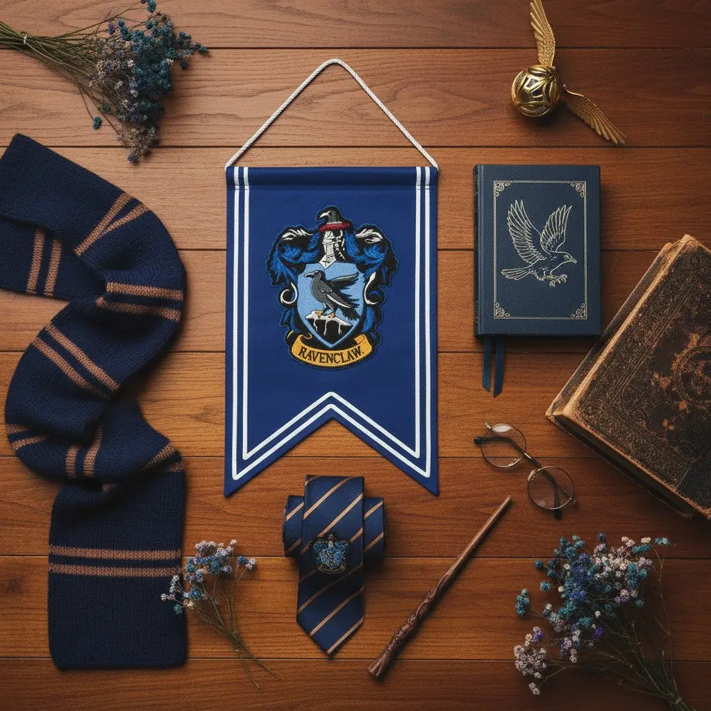
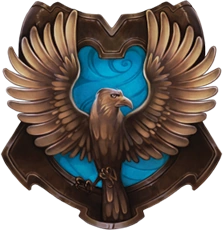
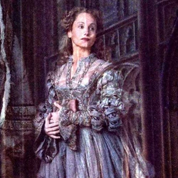
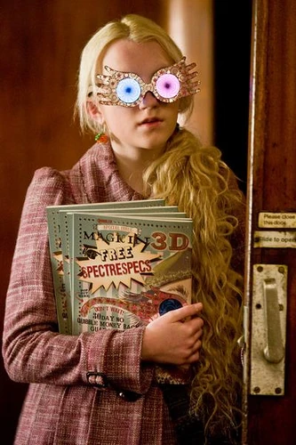
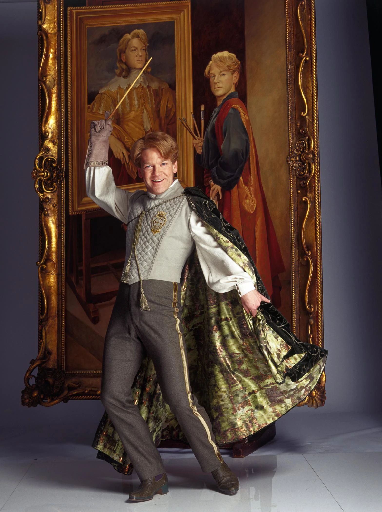
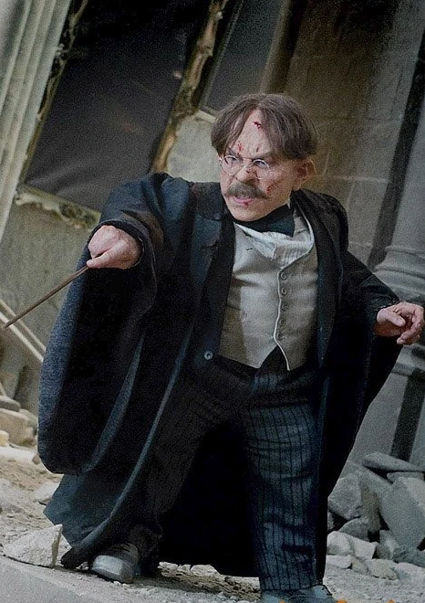

Representa el intelecto y la elevación mental. Su fondo azul simboliza la inmensidad de la mente y el cielo, mientras que el bronce evoca el valor del saber. En el centro, el águila encarna la libertad de pensamiento y la sabiduría para elevarse sobre lo cotidiano en busca del conocimiento puro.

El águila simboliza la elevación del pensamiento y la agudeza mental. Con su capacidad para volar más alto que cualquier otra ave, encarna la libertad intelectual y la constante búsqueda de la sabiduría superior.

La Dama Gris, espectro de Helena Ravenclaw, custodia la memoria de la casa con silenciosa melancolía. Hija de la fundadora, robó la diadema del saber en busca de grandeza, dejando un trágico legado de misterio y arrepentimiento.

Excéntrica e indomable, encarna la libertad de pensamiento en su estado más puro. Su perspectiva única y mente abierta le permiten comprender el mundo más allá de la lógica convencional, uniendo sagacidad, empatía y lealtad.

Representa el intelecto desviado por la vanidad. A pesar de su talento, canalizó sus aptitudes hacia el engaño y los encantamientos amnésicos para apropiarse de logros ajenos, erigiendo una fama brillante pero ficticia.

Jefe de Ravenclaw y maestro de Encantamientos, combina una mente brillante con una profunda calidez humana. Antiguo campeón de duelo, demuestra que la maestría académica alcanza su máximo esplendor cuando se acompaña de amabilidad y ética.